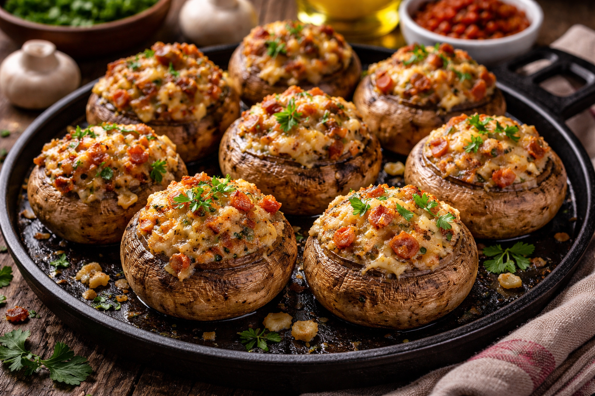
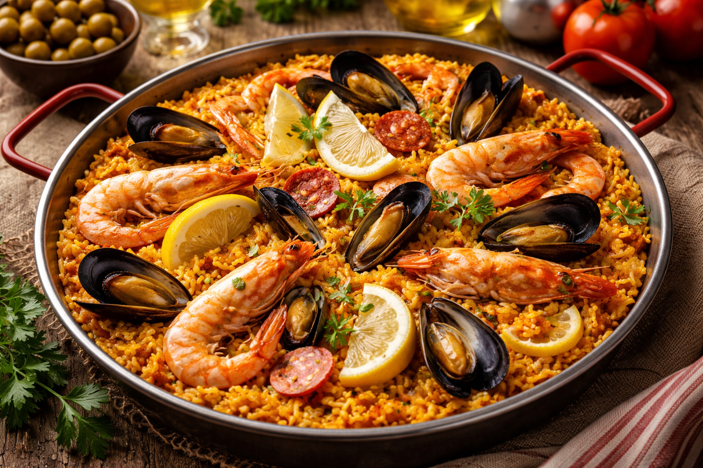
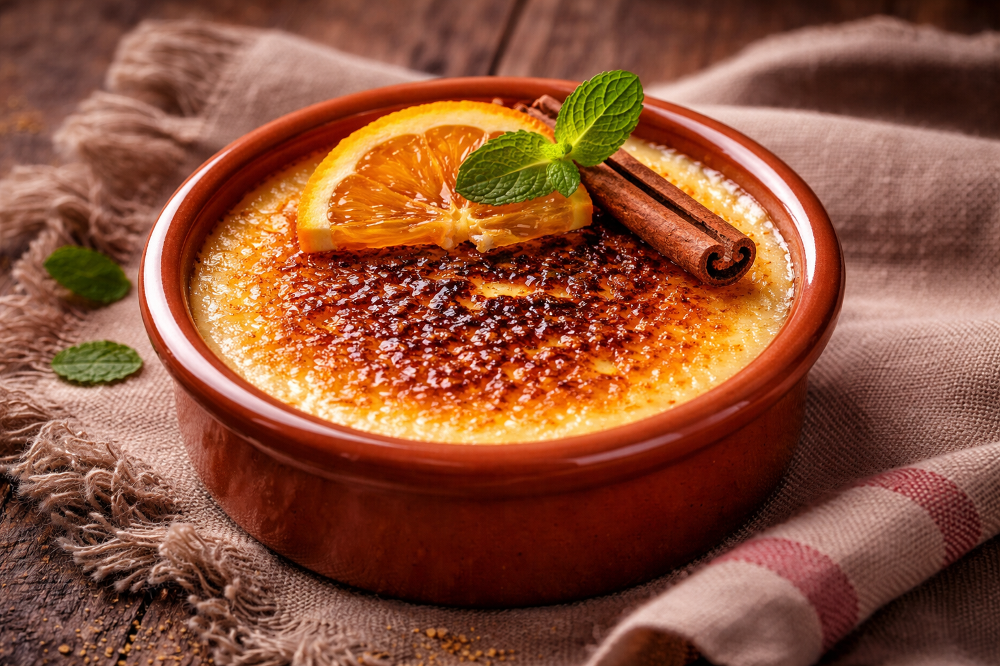

Was zeichnet die spanische Küche aus?
Die spanische Küche zeichnet sich durch frische und hochwertige Zutaten aus, sowie durch mediterrane Einflüsse. Olivenöl, Knoblauch, Fisch, Meeresfrüchte und herzhafte Eintöpfe bilden die Grundlage vieler Gerichte. Die Küche variiert je nach Region: an der Küste dominieren Meeresfrüchte, im Landesinneren Fleischgerichte und defritge Eintöpfe. Typisch sind zudem gewürzreiche Zubereitungen mit Safran, Paprika, Knoblauch und Rosmarin.

Vorspeise
Gefüllte Champigons
Schwierigkeitsgrad: 1-2/10
Gesamtzeit: 40 Min.
Arbeitszeit: 15 Min.
Backzeit: 25 Min.

Hauptspeise
Paella tomas
Schwierigkeitsgrad: 4-6/10
Gesamtzeit: 1 Std. 10Min.
Arbeitszeit: 30 Min.
Koch-/Backzeit: 40 Min.

Nachspeise
Crema Catalana
Schwierigkeitsgrad: 2-3/10
Gesamtzeit: 2 Std. 35 Min.
Arbeitszeit: 25 Min.
Koch-/Backzeit: 10 Min.
Ruhezeit: 2 Std.